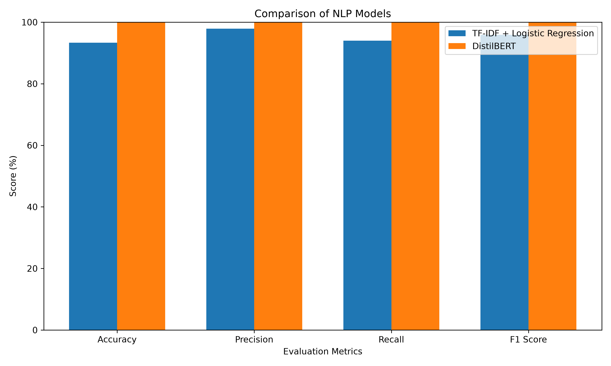
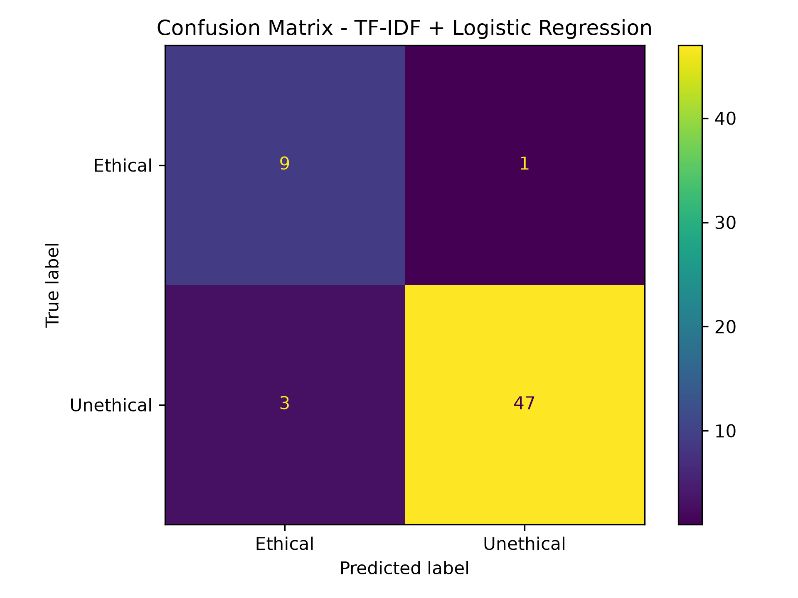

Artificial Intelligence | Natural Language Processing
An NLP-based system for detecting bias and supporting fair decision-making.
This project uses Natural Language Processing (NLP) to analyze decision statements and identify whether a decision is ethical or unethical.
The system also detects possible types of bias and provides a fair recommendation to support ethical decision-making.
A custom labeled dataset containing ethically relevant decision statements was developed for this academic prototype.
The dataset contains 296 decision statements.
Decision: Reject older applicants because they may not understand modern technology.
Ethical Status: 🔴 Unethical
Detected Bias: Age Bias
Fair Recommendation: Do not judge applicants based on age. Evaluate their skills, experience, and ability to learn.
Decision: Reject female applicants for technical jobs.
Ethical Status: 🔴 Unethical
Detected Bias: Gender Bias
Fair Recommendation: Do not make decisions based on gender. Evaluate all candidates using the same qualifications.
Decision: Reject a candidate because they have a physical disability.
Ethical Status: 🔴 Unethical
Detected Bias: Disability Bias
Decision: Reject a candidate because they have a regional accent.
Ethical Status: 🔴 Unethical
Detected Bias: Language Bias
Decision: Select candidates based on their technical skills and qualifications.
Ethical Status: 🟢 Ethical
Detected Bias: No Bias
User Decision Statement
↓
Flask Web Interface
↓
DistilBERT → Ethical / Unethical
+
TF-IDF + Logistic Regression → Bias Type
↓
Fair Recommendation
↓
Final Result + Model Confidence
The models were evaluated using Accuracy, Precision, Recall and F1 Score.
| Metric | TF-IDF + Logistic Regression | DistilBERT |
|---|---|---|
| Accuracy | 93.33% | See evaluation output |
| Precision | See evaluation output | See evaluation output |
| Recall | See evaluation output | See evaluation output |
| F1 Score | See evaluation output | See evaluation output |
The project compares a traditional TF-IDF based machine learning approach with the DistilBERT transformer model.
Confusion matrices show the classification performance of the models on the test data.
Comparison of the evaluation metrics for the two NLP models.

Confusion matrix showing the classification performance of the baseline model.

Confusion matrix showing the classification performance of the transformer model.
The proposed NLP system demonstrates how Artificial Intelligence can assist in identifying potentially biased decisions and supporting fairer decision-making.
The system combines traditional machine learning with a transformer-based model and provides an interactive Flask interface for analyzing decision statements.